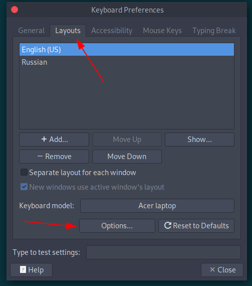
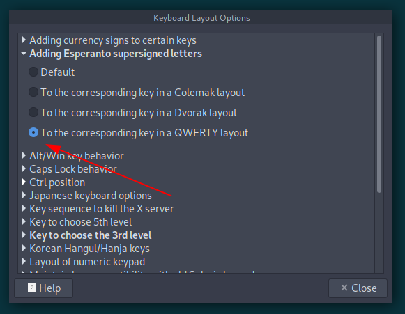
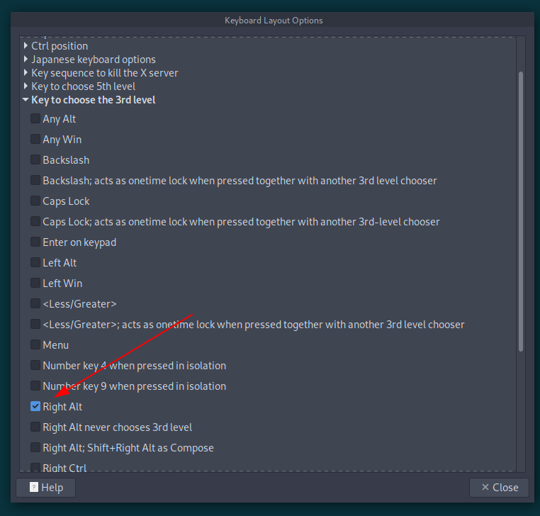
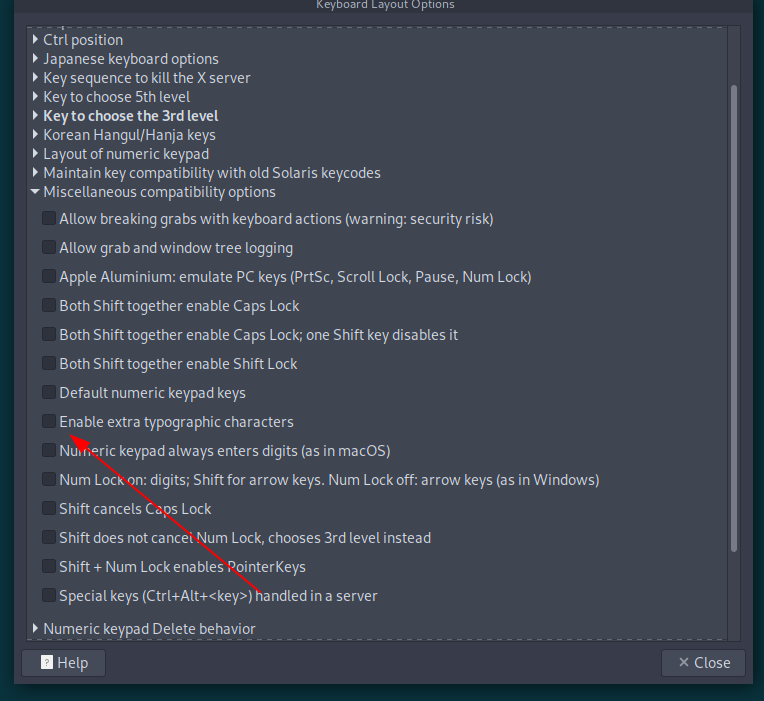

Настройка раскладки Эсперанто в ParrotOS
Включение раскладки Эсперанто
В ParrotOS, как и в других дистрибутивах Linux, можно включить поддержку ввода символов эсперанто: ĉ, ŭ, ĥ, ĵ.
Для настройки откройте Control Center - Keyboard:

В разделе Adding Esperanto supersigned letters установите переключатель в значение To the corresponding key in a QWERTY layout:

В разделе Key to choose the 3rd level установите клавишу которая будет изменять ввод символов c в ĉ, h в ĥ и остальных.

Включение дополнительных типографических символов
Чтобы вместе с быквами эсперанто вводить спецсимволы вроде кавычек-елочек « и » в разделе Miscellaneous compatibility options включите переключатель Enable extra typographic characters.

Эта настройка конфликтует с символами Эсперанто, поэтому придется отредактировать файлы настроек. Настройка раскладок клавиатуры производится через подсистему XKB. Её конфигурационные файлы находятся в каталоге /usr/share/X11/xkb/.
Откройте файл typo с правами администратора:
sudo pluma /usr/share/X11/xkb/symbols/typo
Закоментируйте следующие строки
// key <AD07> { [ NoSymbol, NoSymbol, U20B4, NoSymbol ] }; // "u"
// key <AC02> { [ NoSymbol, NoSymbol, section, NoSymbol ] }; // "s"
// key <AC06> { [ NoSymbol, NoSymbol, U20BD, NoSymbol ] }; // "h"
// key <AC07> { [ NoSymbol, NoSymbol, doublelowquotemark, singlelowquotemark ] }; // "j"
// key <AC08> { [ NoSymbol, NoSymbol, leftdoublequotemark, leftsinglequotemark ] }; // "k"
// key <AB03> { [ NoSymbol, NoSymbol, copyright, cent ] }; // "c"
2
3
4
5
6
7
8
И чтобы не пропала возможность вводить символы кавычек „ и “ добавьте две строки:
key <AD08> { [ NoSymbol, NoSymbol, doublelowquotemark, singlelowquotemark ] }; // "i"
key <AD09> { [ NoSymbol, NoSymbol, leftdoublequotemark, leftsinglequotemark ] }; // "o"
2
Для того, чтобы было можно было быстро печатать символ # на любой раскладке измените строку
key <AE03> { [ NoSymbol, NoSymbol, threesuperior, numbersign ] }; // "3"
Теперь перезагрузите настройки XKB:
setxkbmap -layout us,ru
После этого будут работать и дополнительные топографические символы и раскладка Эсперанто.